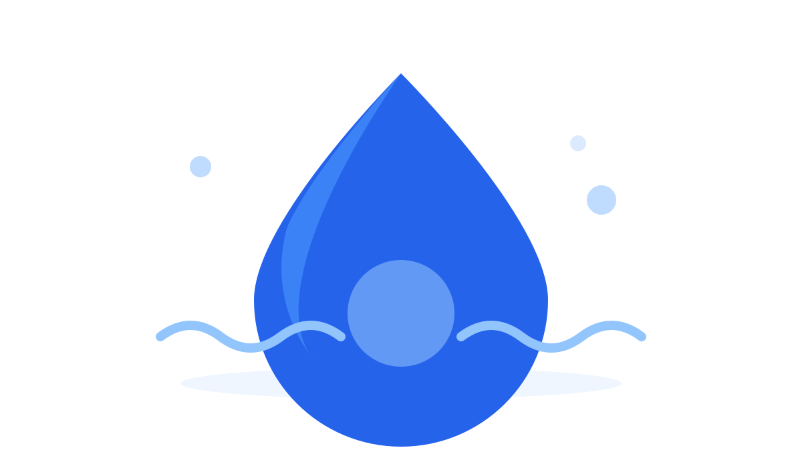

Como ler a conta de água: entenda cada campo da fatura
Página atualizada em 26/11/2026 · Revisão editorial LinkContasA conta de água tem um monte de números — e quase todos importam. Saber ler a fatura é a melhor forma de descobrir sozinho se a conta está certa, quanto você consumiu e onde dá para economizar.
Neste artigo você vê campo por campo: leitura, consumo em m³, tarifa por faixa, taxas, impostos e o que significa "leitura estimada".

Escolha a sua empresa e vá direto ao site oficial dela.
Leitura anterior e leitura atual
Os dois números que mostram o que o hidrômetro registrou. Exemplo:
- Leitura anterior: 1.245 m³
- Leitura atual: 1.263 m³
- Consumo: 18 m³
O consumo da fatura é exatamente a diferença. Se não bater com a leitura impressa, pode haver erro — motivo para contestar.
Consumo em m³: o que significa
1 m³ = 1.000 litros — cerca de 5 baldes grandes. Para ter noção:
- 18 m³/mês = cerca de 600 litros por dia para toda a casa.
- Um banho de 10 minutos ≈ 100 litros (com chuveiro econômico, menos).
- Vaso com descarga antiga: até 12 litros por acionamento.
Compare seu m³ com meses anteriores: subiu sem explicação? Veja conta de água aumentou: o que fazer.
Tarifa e faixas de consumo
Na maioria das empresas, o preço por m³ aumenta em faixas — quanto mais você consome, mais caro cada litro. A fatura mostra o cálculo:
- Ex.: até 10 m³ a R$ X; de 11 a 20 m³ a R$ Y (mais caro); acima, R$ Z.
Por isso estourar um pouquinho a faixa pode encarecer a conta inteira. Entender as faixas ajuda a decidir: vale reduzir 2–3 m³? Muitas vezes sim — veja como economizar água.
Taxas, impostos e serviços
Além do consumo, a fatura traz:
- Tarifa de disponibilidade: custo fixo da rede (é cobrado mesmo sem uso — relate a cobrança sem uso).
- Taxa de saneamento / rede de esgoto: em muitas regiões é cobrada junto, uma porcentagem do valor.
- Impostos (PIS/COFINS, ICMS): já embutidos ou destacados.
- Serviços extras: vistoria, religação, 2ª via (que é grátis).
- Dívida antiga: se houver, aparece como saldo em aberto.
Leitura estimada: como identificar
Quando o leitor não passou, a empresa estima o consumo — a fatura avisa com a marcação "leitura estimada". Riscos: pagar a mais (estimativa alta) ou a menos (a diferença vem depois, com correção).
Para corrigir: envie a leitura real pelo canal oficial (fotografe o hidrômetro) ou peça a vistoria. Muitas empresas deixam enviar a leitura pelo site/app — é o mesmo caminho do 2ª via, na área do cliente.
Nunca pague por "leitura especial" ou informe dados de cartão para regularizar fatura. Leitura e contestação são gratuitas nos canais oficiais.
Veja também
- Como tirar a 2ª via da conta de água
- Conta de água aumentou? O que fazer
- Conta de água errada? Como contestar
- Como economizar água em casa
- Todos os artigos do LinkContas
- Perguntas frequentes do site
Perguntas frequentes
1 m³ de água é quanto?
1.000 litros. Para referência: um balde grande tem cerca de 20 litros — 1 m³ são 50 baldes.
O que significa leitura estimada na conta?
Que o leitor não passou e o consumo foi calculado pela média. Se a estimativa estiver alta, envie a leitura real ou peça vistoria para corrigir.
Por que meu consumo é cobrado em faixas?
Porque o preço por m³ aumenta conforme o consumo — é um incentivo à economia. Ver o cálculo na fatura ajuda a entender o valor final.
A conta de água pode ter leitura negativa?
Não deve. Se os números não fecham (leitura atual menor que a anterior, por exemplo), pode haver erro ou troca de medidor — conteste com protocolo.
Este site emite 2ª via ou lê minha conta?
Não. O LinkContas organiza links oficiais das empresas. Leitura e 2ª via são feitas no site/app da sua concessionária.
Fontes oficiais
Este guia foi conferido com base nas regras e canais oficiais do setor:
- ANA — Agência Nacional de Águas e Saneamento Básico
- SNIS — indicadores de saneamento do governo federal
- Consumidor.gov.br — canal oficial de reclamações
As regras do setor mudam com o tempo: confira sempre a data de verificação no topo desta página e, em caso de dúvida, use os canais oficiais acima.